Bienvenidos a Villa Dolores
Villa Dolores una ciudad con gran corazon y humildad, Con amplios paisajes y zonas turisticas.Es uno de lo mas visitados de traslasierras.
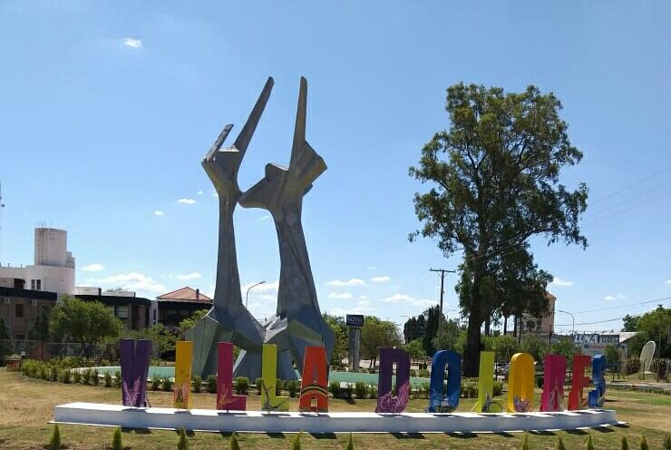Lugares turísticos
- Piedra Pintada(La Oreja)
Uno de los rincones más refrescantes y placenteros en la localidad de Villa Dolores (en el Valle de Traslasierra) es el balneario Piedra Pintada.

Basílica nuestra señora de los Dolores
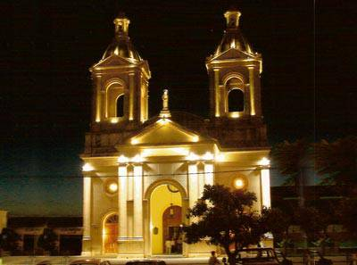
Teatro Español
El Teatro Español fue inaugurado el 12 de octubre de 1925. Breve reseña histórica LA ASOCIACION ESPAÑOLA DE SOCORROS MUTUOS DE VILLA DOLORES celebró su primer centenario 12 de marzo de 2011, ya que fue fundada el 12 de marzo de 1911 por aproximadamente treinta y cinco españoles residentes en la zona.
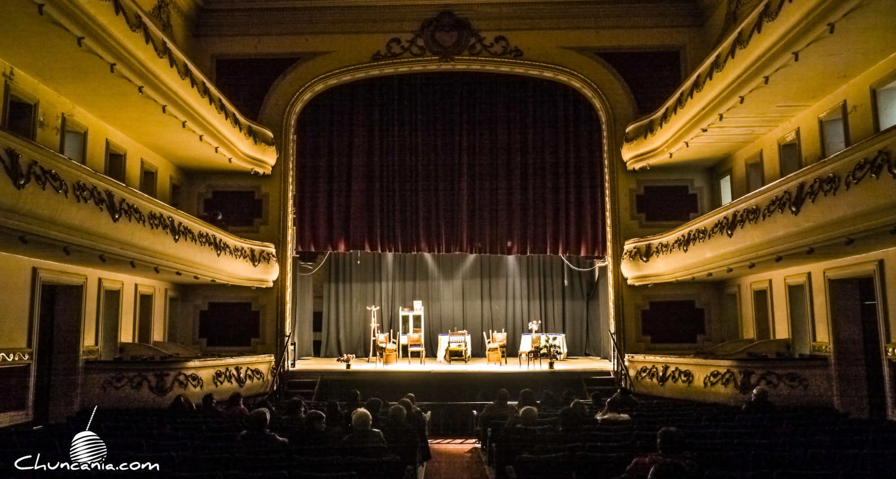
Terminal Paseo la Vieja Bodega
Este viernes 21, Villa Dolores inaugura su nueva terminal de ómnibus, que estará integrada al Paseo La Vieja Bodega, un espacio comercial, histórico y recreativo.
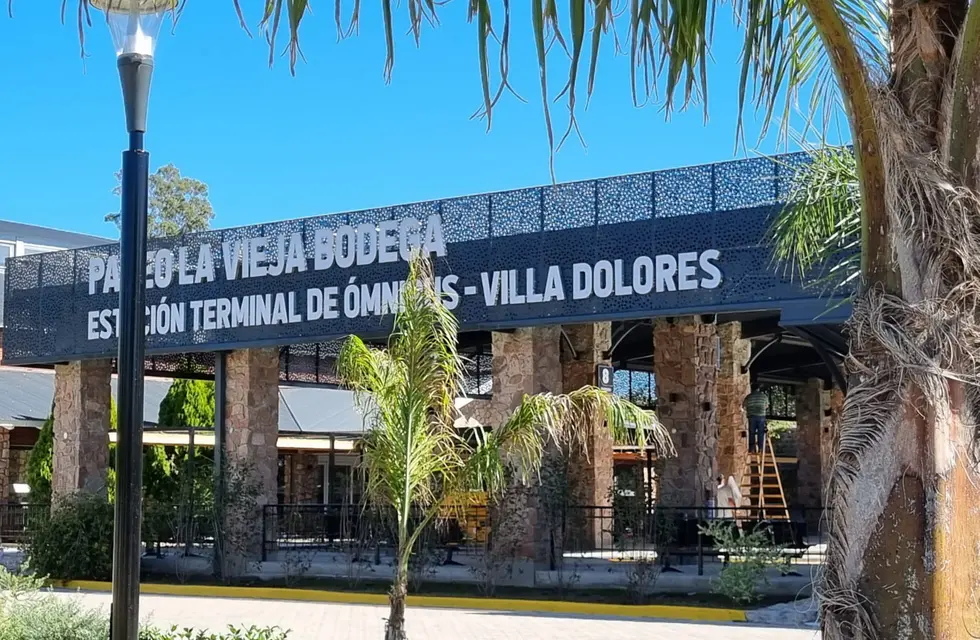
Feria Franca
Vení a disfrutar un domingo diferente y en familia.
Tenemos preparado nuestro amplio patio de comida casera y tradicional, artesanías, cosas dulces, plantas, verduras de estación y mucho más.
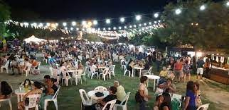
Plaza General Bartolomé Mitre
Creada en 1883 en un pozo de agua con barandas de hierro, tapa de madera y rodeada de asientos, en 1903 se la llamó Plaza Argentina. Cinco años después, obtuvo el nombre con la cual hoy se la conoce.
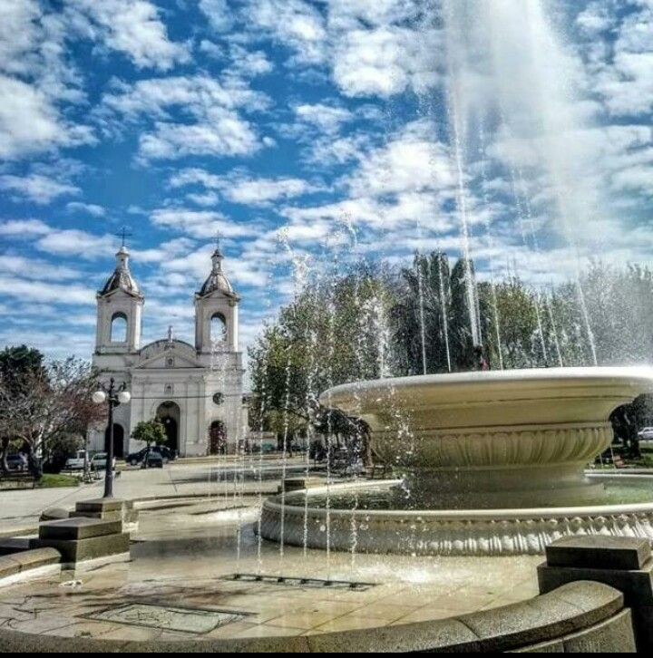
Biblioteca publica municipal
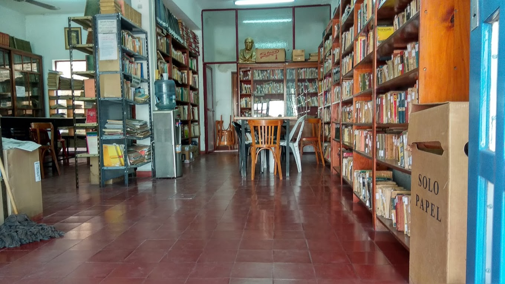
Estos son solo algunos de los lugares turísticos más populares de Villa Dolores. Cada uno tiene su propia historia y belleza única.
Uno de los rincones más refrescantes y placenteros en la localidad de Villa Dolores (en el Valle de Traslasierra) es el balneario Piedra Pintada.
El Teatro Español fue inaugurado el 12 de octubre de 1925. Breve reseña histórica LA ASOCIACION ESPAÑOLA DE SOCORROS MUTUOS DE VILLA DOLORES celebró su primer centenario 12 de marzo de 2011, ya que fue fundada el 12 de marzo de 1911 por aproximadamente treinta y cinco españoles residentes en la zona.
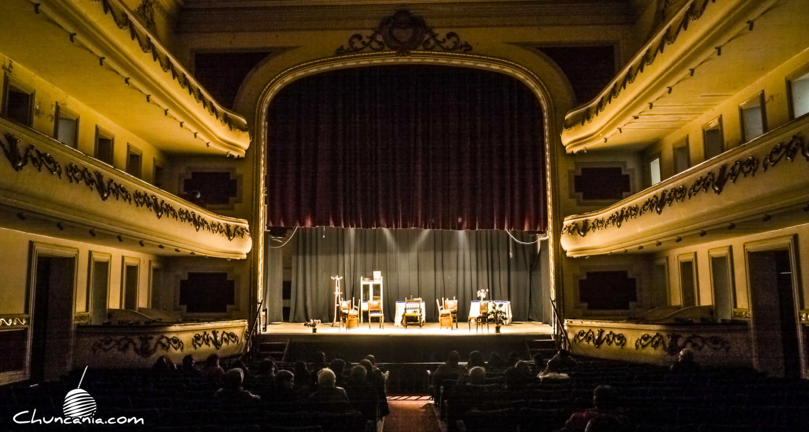Este viernes 21, Villa Dolores inaugura su nueva terminal de ómnibus, que estará integrada al Paseo La Vieja Bodega, un espacio comercial, histórico y recreativo.
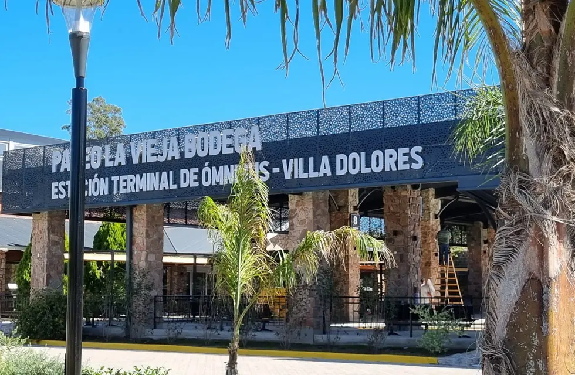Vení a disfrutar un domingo diferente y en familia. Tenemos preparado nuestro amplio patio de comida casera y tradicional, artesanías, cosas dulces, plantas, verduras de estación y mucho más.
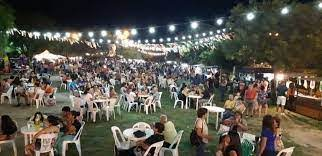Creada en 1883 en un pozo de agua con barandas de hierro, tapa de madera y rodeada de asientos, en 1903 se la llamó Plaza Argentina. Cinco años después, obtuvo el nombre con la cual hoy se la conoce.
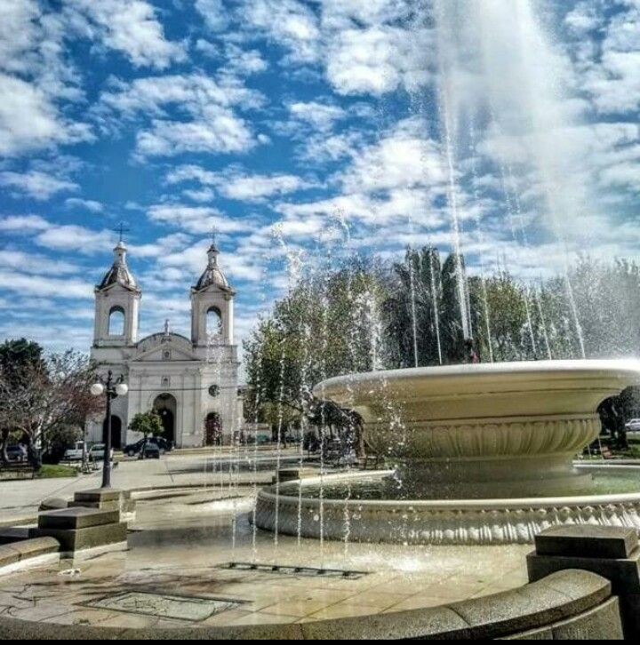Estos son solo algunos de los lugares turísticos más populares de Villa Dolores. Cada uno tiene su propia historia y belleza única.
Hoteles
- Las Lilas

Hotel Las Lilas ofrece una gran variedad de servicios en la habitación, como aire acondicionado, y puedes permanecer conectado, ya que hay wifi gratuito disponible.El hotel pequeño ofrece recepción abierta 24 horas, para que tu estancia sea incluso más agradable. El establecimiento también cuenta con piscina y restaurante. Los huéspedes que lleguen en coche tienen acceso a parking gratis.
Mountains

Hotel Mountains es un hotel pequeño con aire acondicionado y minibar en las habitaciones, y es fácil permanecer conectado durante la estancia, ya que ofrece wifi gratuito para los huéspedes.
El hotel pequeño tiene recepción abierta 24 horas, conserje y servicio de habitaciones. Además, los huéspedes pueden disfrutar de piscina y restaurante, lo que lo ha convertido en una opción popular entre los viajeros que visitan Villa Dolores.
Hotel Las Lilas ofrece una gran variedad de servicios en la habitación, como aire acondicionado, y puedes permanecer conectado, ya que hay wifi gratuito disponible.El hotel pequeño ofrece recepción abierta 24 horas, para que tu estancia sea incluso más agradable. El establecimiento también cuenta con piscina y restaurante. Los huéspedes que lleguen en coche tienen acceso a parking gratis.
Hotel Mountains es un hotel pequeño con aire acondicionado y minibar en las habitaciones, y es fácil permanecer conectado durante la estancia, ya que ofrece wifi gratuito para los huéspedes. El hotel pequeño tiene recepción abierta 24 horas, conserje y servicio de habitaciones. Además, los huéspedes pueden disfrutar de piscina y restaurante, lo que lo ha convertido en una opción popular entre los viajeros que visitan Villa Dolores.

Hotel La Fontana es una magnífica elección para viajeros que vayan a Villa Dolores, ya que ofrece un ambiente económico además de numerosos servicios diseñados para mejorar su estancia. Para que te sientas como en casa, las habitaciones en la casa de huéspedes incluyen aire acondicionado, y mantenerte conectado es fácil, ya que hay wifi gratuito disponible. Los huéspedes tienen acceso a recepción abierta 24 horas y espacio para guardar el equipaje durante su estancia en Hotel La Fontana. Y otra ventaja es que hay parking gratis disponible para los huéspedes.

Bienvenido a Ariane Hotel, tu segundo hogar en Villa Dolores. Ariane Hotel tiene como objetivo conseguir que tu visita sea lo más relajante y agradable posible, razón por la que tantos huéspedes siguen volviendo año tras año. Las habitaciones de los huéspedes incluyen minibar y aire acondicionado, y Ariane Hotel te ayuda a que estés conectado, ya que dispone de wifi gratuito.
la atención del personal del hotel, todos siempre predispuestos. El desayuno lo mejor!! Hay una nueva gestión poniendole todo para que los huespedes quieran volver
Los hoteles de Villa Dolores son famosos por su lujo y atención al cliente.
Eventos
- Festival de la papa

- Semana estudiantil

- Encuentro internacional de poetas
Bajo la organización del Grupo Literario Tardes de la Biblioteca Sarmiento, la ciudad recibe a poetas y escritores de diferentes puntos del país y del exterior, que se reúnen a celebrar una nueva edición del tradicional encuentro literario.Se realizan varias actividades, como visita a escuelas por parte de Poetas, mesas de lecturas, y más.
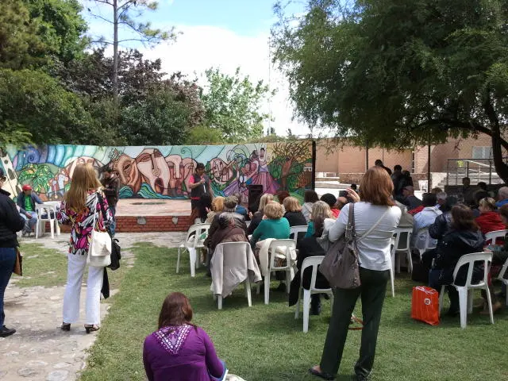
Restaurantes
- Bonafide

- Demetria
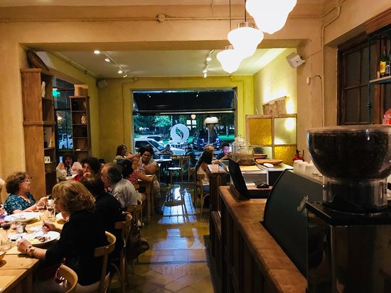
- Walfer
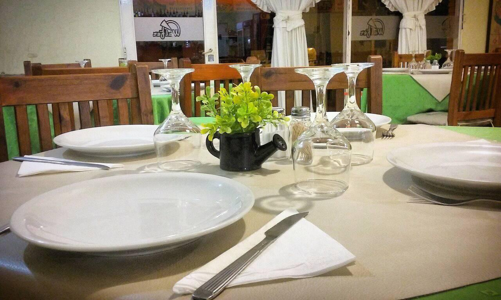
- Waldo

Estaciones de servicio
- Puma energy
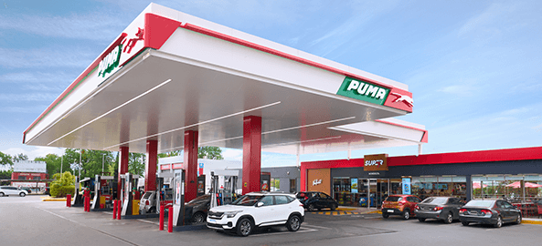
- YPF
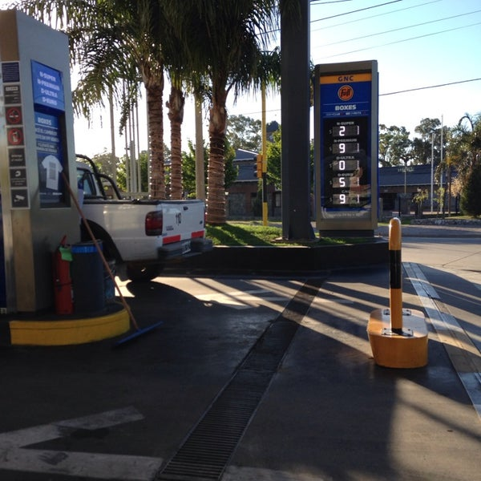
- Axión
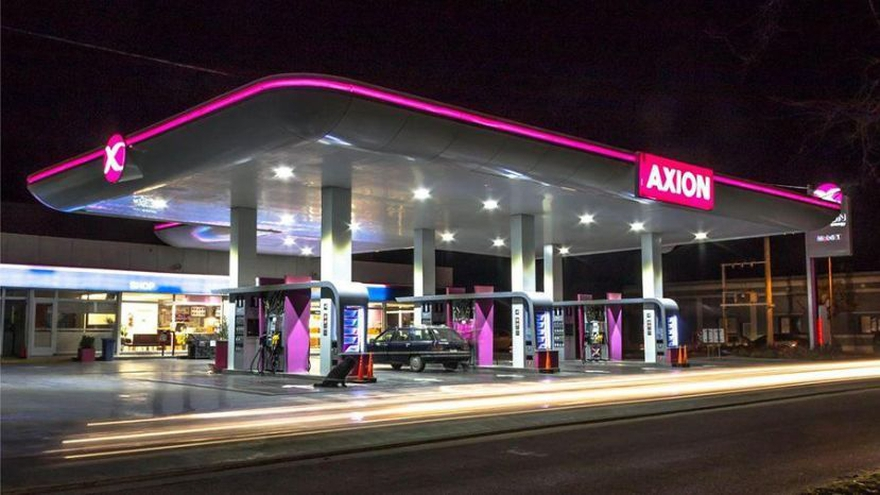
- Shell
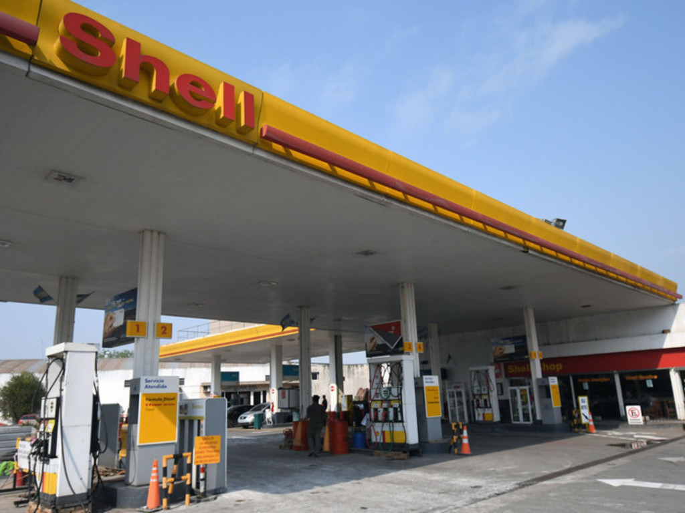
Bajo la organización del Grupo Literario Tardes de la Biblioteca Sarmiento, la ciudad recibe a poetas y escritores de diferentes puntos del país y del exterior, que se reúnen a celebrar una nueva edición del tradicional encuentro literario.Se realizan varias actividades, como visita a escuelas por parte de Poetas, mesas de lecturas, y más.
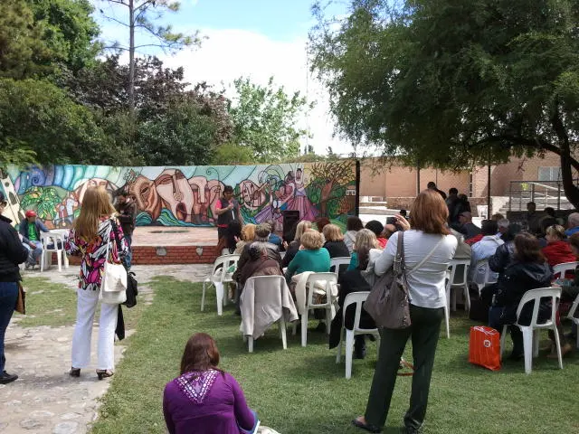Restaurantes
- Bonafide
- Demetria
- Walfer
- Waldo
- Puma energy 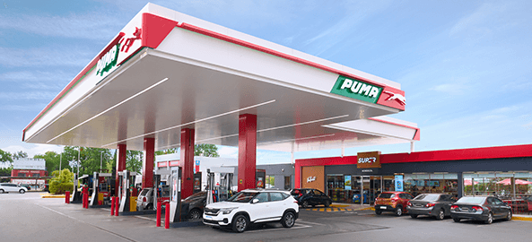
- YPF 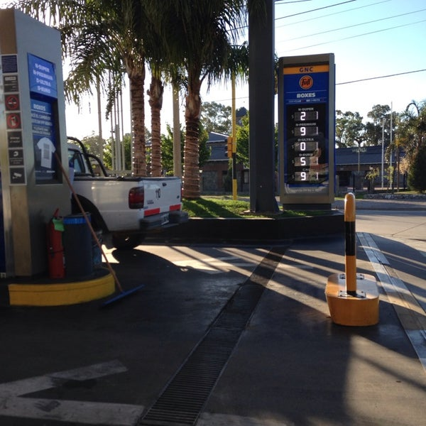
- Axión 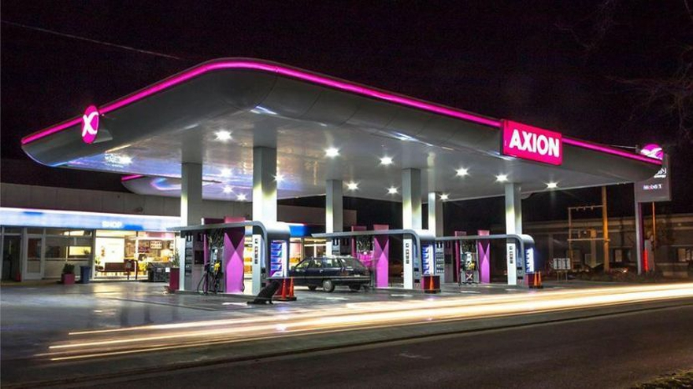
- Shell 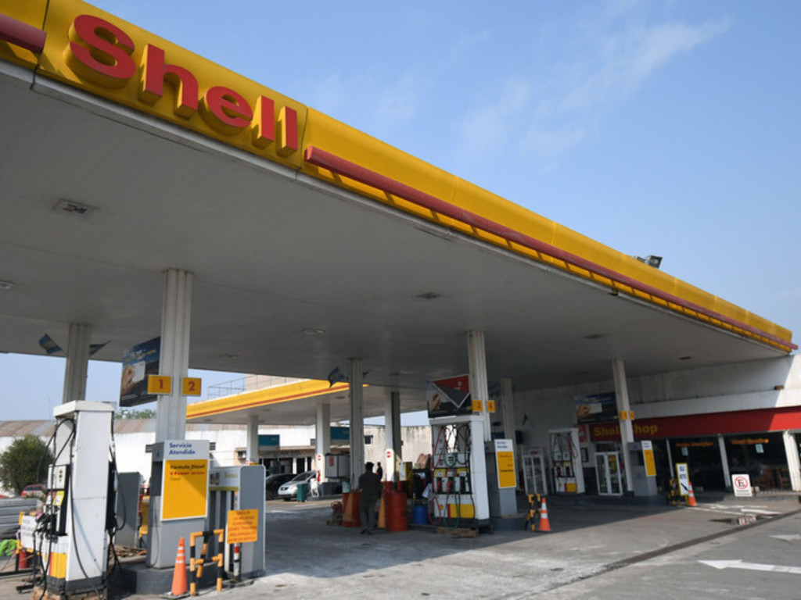